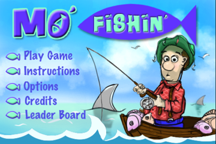

<section class="Featured">
	<div class="Frame FLC">

		<header>
			<h1>Mo' Fishin'</h1>
		</header>

		

		<div class="description">
			<p>Grab a fishing pole and hop in your boat, it's time for Mo Fishin! Catch fish and win tournaments but beware of sharks, barracudas, piranhas and moray eels, they will cut your line and free your fish. Aim the hook by tapping the "reel" button and flick your iPhone for casting. With the right timing and aim you'll be a Master Fisherman in no time! If you want Big Points, go for the gold coins on the bottom of the sea. But don't get too greedy, you might just end up with a tin can or an old boot.</p>
			<a href="http://itunes.apple.com/us/app/mo-fishin/id371238232?mt=8"></a>
		</div>

	</div>
</section>
